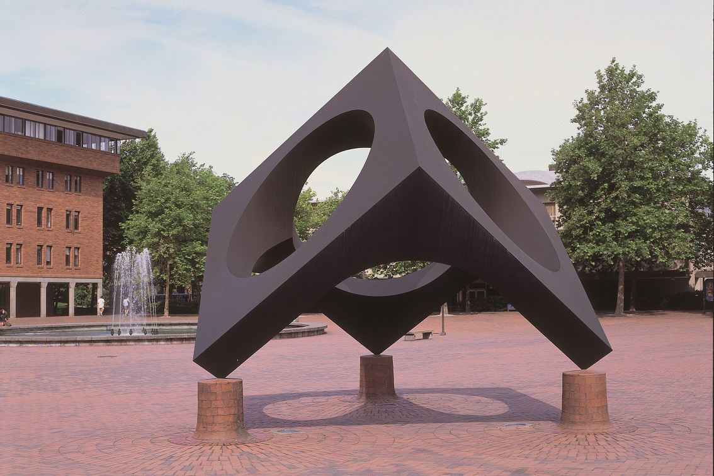
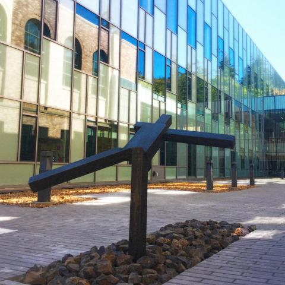

Skyviewing Sculpture
- Isamu Noguchi, 1969.
- Painted iron plate. 14' h. x 17' w.
- The Skyviewing Sculpture invites people in and guides their eyes up,
to behold the changing skies through the circular openings.
Once inside, viewers experience the tilted cube in an entirely
different form, open and uplifting. Noguchi designed the sculpture
as an active participant in the dynamic life of the Red Square.
He described it as “a sculpture of living environment.”

Untitled
- Joel Shapiro, 1980-81.
- Cast bronze. 52 7/8" h. x 64" w. x 45 1/2" d
- While using abstracted minimalist shapes, Shapiro
introduces narrative, drama and autobiography into
his art. His figures interact with the surrounding
space in their various configurations, often
reminiscent of dance routines or other athletic
movements. Here the figure is balanced on one leg
with one arm extended, giving a transitional
feeling between nimbleness and lack of control.